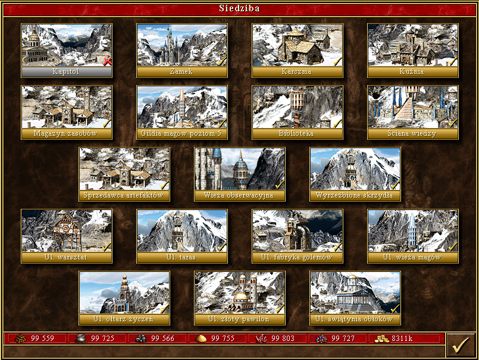

Miasto czarodziejów w nietypowej odsłonie. W każdej innej grze, w której się pojawiało - Heroes II, MM VII, Heroes V - było ukazywane w bardziej pustynnych klimatach. Od ostatniej części odbyło się małe przetasowanie - roki, hobbity i dziki się wyprowadziły, dołączyły wcześniej neutralne dżinny, gargulce zostały skradzione czarnoksiężnikowi oraz pojawiły się stwory zupełnie nowe - gremliny i nagi. Państwem magów jest górzysta Bracada znajdująca się na południowym półwyspie Antagarichu. W Heroes III jest mroźna, a w MM7 przeciwnie - pustynna, dlatego można stwierdzić, że teren ten to pustynia z wysokimi, ośnieżonymi górami, tak jak np. Kilimandżaro w Afryce. Stolica to podniebne miasto Celeste, a w zamku w chmurach - Castle Lambert - rezyduje osobliwy władca, Gavin Magnus. Jest to bardzo sędziwy czarodziej, który dzięki nieśmiertelności pamięta jeszcze czasy dawnego cesarstwa Bracaduun, które twardą ręką rządziło innymi ludami, m.in. barbarzyńcami.
Forteca cieszy się szerokim gronem zwolenników. W początkowym etapie gry strategia bitewna opiera się na niepozornych gremlinach, które po ulepszeniu zyskują możliwość ataku dystansowego. Z czasem jednak te jednostki tracą na znaczeniu i ustępują pola innym. Frakcja ta jest nastawiona wyjątkowo defensywnie - armia jest stosunkowo wytrzymała, a ponadto skupia w sobie aż trzy jednostki strzelające. Oczywista staje się potrzeba zgłębienia sekretów łucznictwa. Bardzo ciekawe jest tutejsze Sanktuarium Graala – Podniebny galeon odsłania przed nami cały teren, co pozwala dokładnie kontrolować posunięcia oponentów. Schody pojawiają się w aspekcie ekonomicznym. Rozbudowa miasta jest niestety bardzo kosztowna. Trzeba przygotować się na spore wydatki w złocie i pozostałych surowcach, ze szczególnym nastawieniem na klejnoty. Mimo wszystko, Forteca spisuje się dobrze, zarówno na małych jak i dużych mapach.
[Źródło tekstu]
